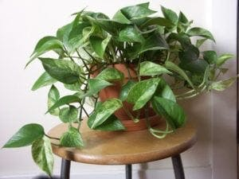

نبات البوتس او اللبلاب أو قلب عبدالوهاب Epipremnum aureum ويسمى في اغلب المشاتل بنبات المداد الداخلي، من نباتات الزينة الداخلية التي تنجح زراعتها بدرجات حرارة تتجاوز 30 درجة مئوية. موطنه الأصلي جزر سليمان.
له العديد من الانواع تختلف غالباً في الوان الاوراق ودرجة تلونها وتصبغها بالالوان الفاتحة مثل بوتس ماربل كوين وهو من النباتات الجميلة خاصة إذا ما استعملت في الأصص المعلقة حيث تتدلى فروعه بأوراقها الجميلة، وهو من أنجح نباتات الزينة الداخلية، لذلك يستخدم كثيرا داخل المنازل والمكاتب في المناطق الجافة خصوصاً مع توفرها بشكل كبير وبأحجام مختلفة يمكن وضعها على الطاولات او الارفف او حتى كنبتة كبيرة بين اثاث المنزل او المكتب.
أوراقه مدببة الأطراف تنتشر فيها نقاط وخطوط صفراء تضفي عليها لمسة جمالية، ومن السهل التعامل معها ورعايتها. فيمكن مثلاً لف الأفرع الطويلة منه على أسلاك بلاستيكية وتمديده في جهات مختلفة من الغرفة أو المكتب لتملأ المكان بأوراقه فيظهر وكأنه نبات متسلق. وهو من افضل النباتات للمبتدئين في العناية بالنباتات كونه يتحمل مختلف الظروف والبيئات ولايحتاج للكثير من العناية.